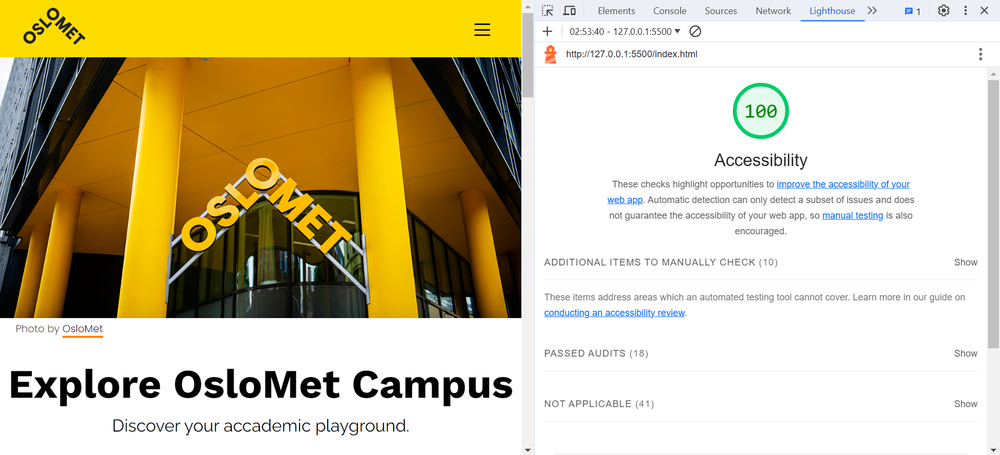

For the comprehensive evaluation of accessibility across all five pages of our website, we utilized the browser's built-in inspect tool called "Lightroom". This enabled us to conduct an automated accessibility test, providing a detailed score out of 100 for each page. Remarkably, all pages scored 100%, reflecting a commitment to making our content universally accessible. This automated test ensures adherence to key accessibility standards, including proper labeling of elements, logical document structure, and sufficient color contrast.

Photo by Tamara Awadh
Page 1: Home
In crafting the "Explore OsloMet Campus" page, our primary focus was on creating an accessible and intuitive gateway to the diverse pages of the site. Acting as the home/landing page, it serves as a comprehensive overview of OsloMet, linking seamlessly to key sections. Emphasis was placed on linking to the main buildings, Pilestredet 32 and Pilestredet 35. Additionally, the introduction of the featured student article (Page 4) aims to enrich the visitor experience by showcasing exemplary student work.
Key Achievements
- General Introduction: Acting as the landing page, Explore OsloMet Campus introduces visitors to the essence of our academic hub, setting the tone for a user-friendly digital journey.
- Linking: Through careful coding choices, we seamlessly integrated links to the other 4 pages, facilitating easy navigation and exploration for all users.
- Contrast Optimization: In our pursuit of aligning with OsloMet's distinctive brand colors, extending beyond the traditional yellow and black palette, we introduced the vibrant color orange. Initially, we aimed to utilize this secondary orange hue for links. However, during an automated test, a contrast issue emerged when placing orange text against a white background. Swiftly adapting to this feedback, we promptly adjusted the link style, opting for an orange underline while retaining the black text color. This modification effectively addressed the contrast concern, ensuring that all visitors can effortlessly navigate the diverse offerings within OsloMet's digital realm.
Pages 2 - 3: Pilestredet Buildings
The layout design for pages 2 and 3, showcasing various locations within the buildings, not only offers valuable insights but also aligns with HTML5 standards, contributing to the high accessibility score.
Key Achievements
- Semantic HTML Structure: The use of semantic HTML elements is a key adherence to HTML5 standards. Each location section consists of an image followed by a descriptive paragraph.
- Alt Texts for Images: Each image is accompanied by descriptive alternative text (alt text). This not only caters to users who may not be able to view the images but also aligns with accessibility best practices. This enhances the document's readability and assists assistive technologies in interpreting the content accurately. Screen readers can convey this information to users with visual impairments, ensuring an inclusive experience.
- Consistent and Intuitive Navigation: The consistent layout across both pages, featuring images followed by descriptive text, provides a predictable structure. This predictability is crucial for users with cognitive disabilities or those navigating with assistive technologies. It adheres to HTML5 standards by creating a cohesive and easily navigable user interface.
Page 4: Student Article
The OsloMet Chronicle's student article page achieves a 100% accessibility score. Design choices, like a navy background, white text, and yellow underlined links, ensure optimal color contrast (All colours are derived from the OsloMet branding colours). The article content is placed on a white background, surrounded by a navy border, which enhances text readability. Descriptive alt text for the main image fosters inclusivity, while semantic HTML and responsive design contribute to a well-structured, adaptable page. Overall, the design not only visually stands out but also prioritizes accessibility for a diverse audience.
Key Achievements
- Optimal Colour Contrast: Strategic design choices, such as a navy background, white text, and yellow underlined links, were implemented to ensure high color contrast.
- Enhanced Text Readability: The article body's white background, surrounded by a navy border, focuses the reader's attention, making the text more readable and creating a visually pleasing layout.
- Strucuted and Adaptable Design: Implementation of semantic HTML and a responsive design ensures a well-structured and adaptable page, catering to users accessing content across various devices.